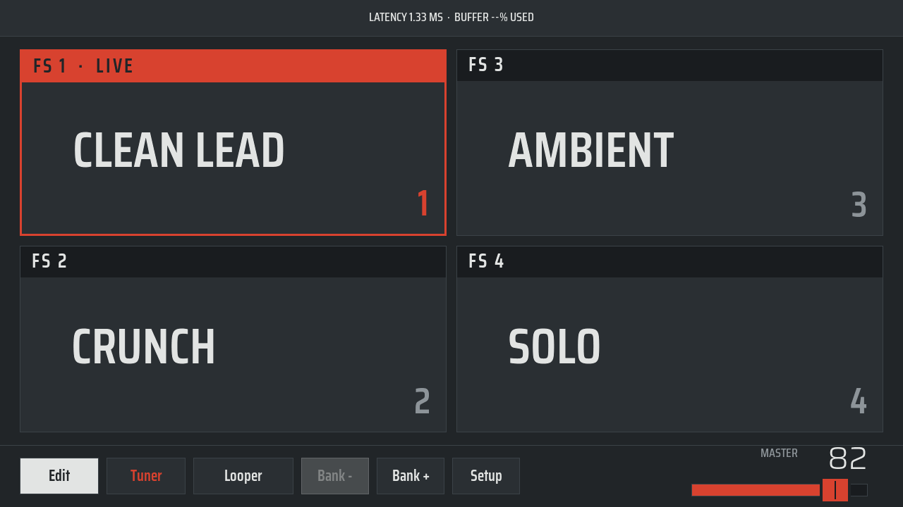
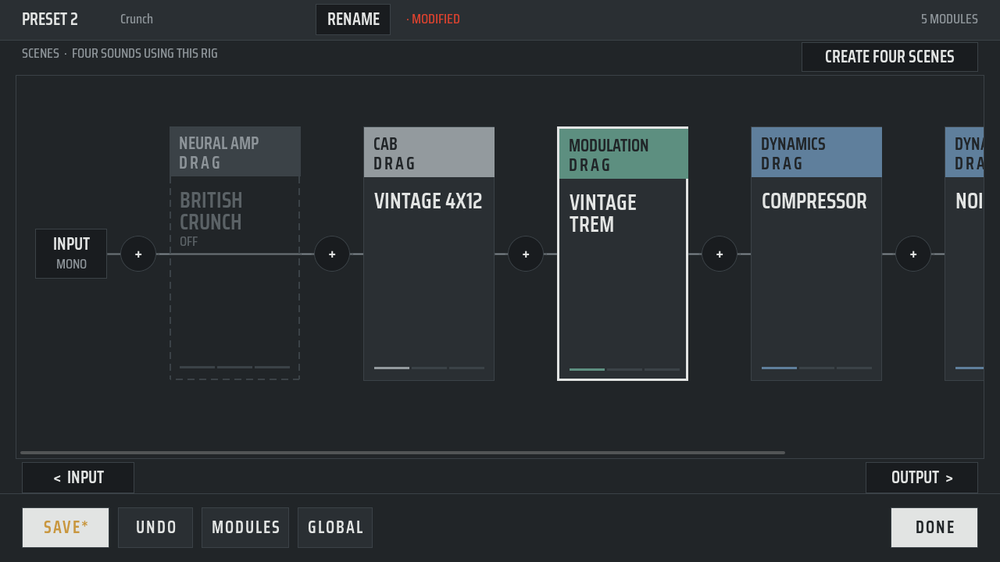
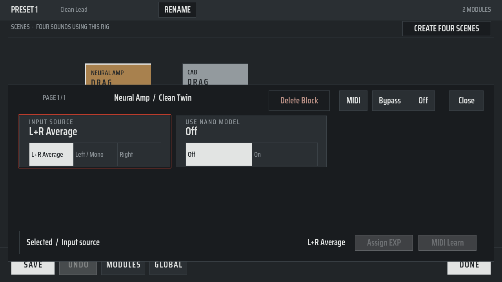
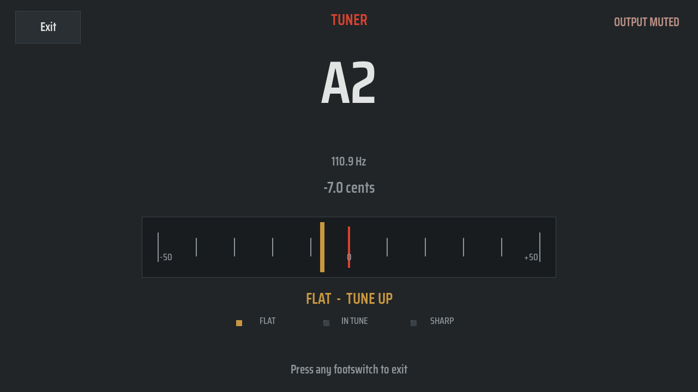

A review of the current LVGL touch UI, with five mockup directions. All screenshots below come from the real UI, rendered headless from pedal-lvgl-ui-smoke and a small capture tool.
Design read: redesign of a 1280 x 720 appliance touch UI for gigging guitarists who glance at it from 1.5 m in low light. Instrument-panel language, built only from flat LVGL planes, arcs and pre-dithered bitmaps. Dials: variance 5, motion 2 (patch change must be instant), density 3.
Flat is not the problem. The spec asks for flat on purpose, because RGB565 bands every gradient. The problem is low contrast, no colour and no scale.




The Slate plates are #191c1f, #212528 and #2a2f33. That is three greys within a few percent of luminance. Nothing is really dark and nothing is really bright, so no surface comes forward.
Red appears only on the live border. The family colours are desaturated, and the preset screen does not use them. Three quarters of the main screen is neutral grey.
The live tile has the same fill, the same name size and the same weight as the others. From a steep angle a 3 px border is easy to miss.
Each tile is a large rectangle with one word. The big slot numeral repeats the FS label. Nothing tells you what the preset sounds like.
All four preset names are the same size. Buttons, headers and legends use similar sizes and weights, so the eye has no entry point.
The Tuner button text and the master slider use the lamp red, which the One Lamp Rule reserves for LIVE. Button labels mix "Edit" and "SAVE" case. Master mixes Saira Light and Condensed.
Primary, secondary and disabled buttons are all the same grey box. Only a white fill marks the primary one, and that fill also means "selected" in choice rows.
The edit rail leaves half its area empty, and block cards are 330 px tall with one name in them. The parameter page is mostly blank.
Keep the Panel language. Near-black ground, a fully flooded live tile, family-colour chain strips on every preset.
Each preset is a painted stompbox in a colour the player picks. Hard offset shadows, jewels, footswitches, patch cables.
Every tile draws its own signal path. Parameters become big arc knobs that the encoder turns. IN and OUT meters in the header.
Gig-poster type. No boxes, huge names over ghost footswitch numerals, one yellow flood. The tuner floods the whole screen when in tune.
Tolex, brushed plates and a chrome live plate with a pilot jewel. Chicken-head master knob and a VU needle tuner.
LvglUiStyle.cpp and fixes the value range and the weak live state.